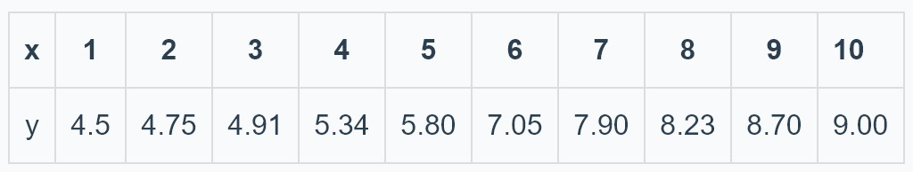
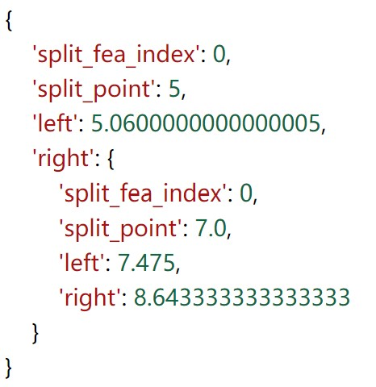
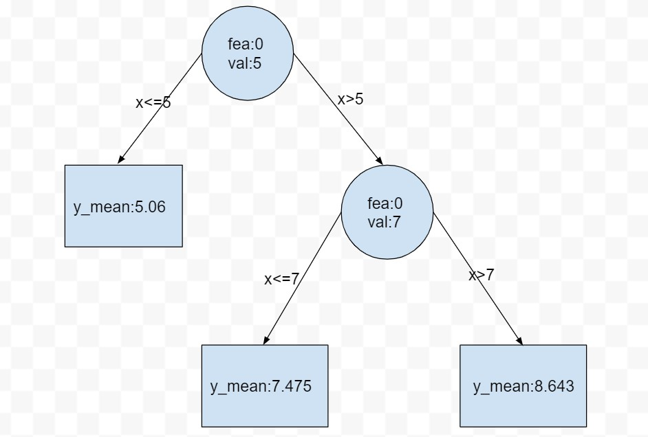

开篇
在之前的决策树讲解（传送门）中，我们使用ID3算法生成了一棵决策树，并且在文章最后指出除了ID3算法，常用的决策树生成算法还有C4.5。
但是，无论是基于信息增益的ID3算法，还是基于信息增益比的C4.5算法，它们都只能处理分类问题，而对于回归问题就束手无策了。
现在，我们要介绍一种既可用于分类任务又可用于回归任务的决策树的生成算法：CART算法。
CART的全称是 classification and regression tree，译为分类与回归树，该算法由两步组成：(1)决策树生成；(2)决策树剪枝。
本文重点关心如何用决策树做回归任务，因此本文的主题是讲解回归树的生成原理及其Python实现。下面正文开始。
回归树的生成
对于使用ID3算法或者C4.5算法生成的决策树，这棵树可能是多岔的，因为某个被选定用于划分数据集的特征的不同取值可能多于两个。而这里基于CART算法的决策树，无论是回归树还是分类树，它们都是二叉树。
以回归树为例，为什么是二叉树呢？这还得从回归树的生成原理讲起。
对于给定的训练集$(X,Y)$，其中$Y$是连续型变量，首先*按照某种方法选择某一个特征(这里记作selected_feature)以及该特征所有取值中的某一个(这里记作s)，然后开始遍历全部样本的selected_feature列，比较每一个样本selected_feature 的取值与s的大小，如果样本的selected_feature取值大于s，则会被归到一个区域，反之如果样本的selected_feature取值小于等于s，则会被归到另一个区域。s作为父节点，这两个区域作为s的两个子树，就构成了一棵二叉树。这便是回归树是二叉树的原因。当然，为了得到最终的回归树，划分后得到的子区域会递归地执行以上操作。
上一段加粗的某种方法，在这里是启发式的。具体来讲，遍历训练集的每一个特征作为selected_feature，以及每个selected_feature的所有不同取值作为s 。 用这些(selected_feature，s)的组合去重复我们上面讲的过程，根据某个规则找到最优的(selected_feature，s)组合。每一个组合都会得到一个划分后的结果(一分为二)，我们选择最优组合划分得到的结果。
上一段加粗的某个规则，在这里是“平方误差最小”。具体来讲，每一次划分都将原数据集一分为二，得到两个子区域。每一个子区域都含有若干个样本，对于这些样本，采用平方误差最小的思想，求解每一个样本与该区域输出值（该输出值是固定的）的平方误差，并将这些平方误差求和作为损失，使得损失最小的该区域输出值就是我们想要的输出值。对于另外一个子区域也做同样操作。所以，这是一个最优化问题。
为了接下来的推导，我们用数学语言来描述一下刚刚的过程：假设经过一次划分后得到两个子区域$R_1$与$R_2$，以$R_1$为例进行说明：记$R_1$的输出值为$c_1$，则我们的优化目标是$\sum_{x_i \in R_1}^{} {(y_i-c_1)}^2$取最小值时的$c_1，i=1,2,…,q$，$q$为子区域$R_1$所含样本数。
求解该优化问题也很容易，直接让$\sum_{x_i \in R_1}^{} {(y_i-c_1)}^2$对$c_1$进行求导，得到$-2\sum_{x_i \in R_1}^{}(y_i-c_1)$，令$-2\sum_{x_i \in R_1}^{}(y_i-c_1)=0$，即$\sum_{x_i \in R_1}^{}(y_i-c_1)=0$，进一步化为$\sum_{x_i \in R_1}^{}y_i-qc_1=0$，从而得到$c_1=\frac1q \sum_{x_i \in R_1}^{}y_i$。
这说明子区域$R_1$的最优输出值$c_1$就等于$R_1$所含全部样本目标值(y)的平均。
对于$R_2$同理。
你可能还有个问题：为什么要选择平方误差最小呢？有什么依据吗？
回想一下，在之前的ID3算法中，特征选择的依据是使得信息增益最大，因为信息增益越大，说明这个特征的将加入使得类别的熵的下降幅度越大，从而类别的不确定性就越小。不确定性越小，越有把握分类正确。 在回归树中，我们自然也希望某个特征可以具有出色的能力将当前数据集一分为二（每个子区域内部相似度高，两个子区域之间相似度低），而我们已经计算得到每个子区域的输出值是该子区域内全部样本目标值的均值，因而这里的平方误差其实衡量了每个子区域内的每个样本到这些样本中心的距离，这些距离之和越小，说明这些样本的目标值越接近。目标值越接近，说明这些样本在某些方面更加相似。能够把较为相似的样本归到同一个子区域，说明选择的特征的确有能力将原数据集划分开来，一分为二。
以上分块介绍了回归树生成的原理，现在把它们串起来，就得到了下面的回归树生成算法：
(1) 遍历每一个特征selected_feature以及每一个特征的所有取值s，求解使得下式最小的 (selected_feature，s)组合：
$$min_{c1} \sum_{x_i \in R_1(selected_feature,s)}^{}{(y_i-c_1)}^2+min_{c2} \sum_{x_i \in R_2(selected_feature,s)}^{}{(y_i-c_2)}^2$$
(2)用选定的 (selected_feature，s)组合划分区域并确定相应的输出值：
划分后的区域为：
$$R_1(selected_feature,s)={x|x^{(j)}\leq s}, R_2(selected_feature,s)={x|x^{(j)}>s}$$
输出值为：
$$c_m=\frac1N_m \sum_{x_i \in R_m(selected_feature,s)}^{}y_i,x \in R_m, m=1,2$$
其中$N_m$是划分得到的第$m$个子区域所含样本的个数。
(3)对得到的两个子区域$R_1$与$R_2$调用(1),(2)，直至满足停止条件。
(4) 经过以上步骤，得到$M$个子区域$R_1,R_2,…,R_m$，生成的回归树为：
$$f(x)=\sum_{m=1}^{M}c_mI(x \in R_m)$$
其中$I$是指示函数。
案例实战
使用下面的训练数据生成一棵回归树。

只有一个特征x，所以选择特征x。
切分点取x=1，可以将训练集分为两部分：{1}，{2，3，4，5，6，7，8，9}
$$c_1=4.5，c_2=(4.75+4.91+5.34+5.80+7.05+7.90+8.23+8.70+9.00)/9=6.853$$
计算$error=(4.5-c_1)^2+\sum_{i=2}^{10}(y_i-c_2)^2=22.648$
同理，对于其他切分点做以上运算，最后共得到10个error值，其中最小error对应的切分点就是当前选择的切分点。
递归地对子区域执行以上操作即可。
这里中间的计算过程很多，就不再一一手动计算了，接下来用Python程序来实现上述过程。
Python实现回归树
读取训练数据
1
2
| dataset=pd.read_csv('rdt.csv')
print(dataset)
|
输出
1
2
3
4
5
6
7
8
9
10
11
| x y
0 1 4.50
1 2 4.75
2 3 4.91
3 4 5.34
4 5 5.80
5 6 7.05
6 7 7.90
7 8 8.23
8 9 8.70
9 10 9.00
|
我们先初始化一个回归树类：
1
2
3
4
| class RegressionTree():
def __init__(self,eps,min_N):
self.eps=eps
self.min_N=min_N
|
其中eps和min_N分别是“划分子区域后能接受的误差下降最小幅度”和“子区域能接受的最少样本数”，在后面你将会看到这两个属性的作用。
首先实现一些基础工具：计算叶节点值，计算平方误差，数据集划分。后续的方法会基于这些基础工具。
计算叶节点值和平方误差的方法：
1
2
3
4
5
6
7
|
def leaf(self,dataset):
return np.mean(dataset.iloc[:,-1])
def cal_se(self,dataset):
return np.var(dataset.iloc[:,-1])*dataset.shape[0]
|
数据集划分方法：
1
2
3
4
5
6
7
8
9
10
11
12
13
14
15
16
17
18
|
def split_dataset(self,dataset,fea_index,split_point):
subset1,subset2=[],[]
n_samples=len(dataset.iloc[:,0])
for i in range(n_samples):
sample=list(dataset.iloc[i,:])
if sample[fea_index]<=split_point:
subset1.append(sample)
else:
subset2.append(sample)
subset1=pd.DataFrame(subset1)
subset2=pd.DataFrame(subset2)
return subset1,subset2
|
例如，对本例数据集做划分，假设选择特征x作为划分特征，x的取值3作为切分点，调用上面的方法：
1
2
3
4
5
6
7
| min_N=2
eps=1
dataset = pd.read_csv('rdt.csv')
rdt=RegTree(eps,min_N)
subset1,subset2=rdt.split_dataset(dataset,0,3)
print(subset1,'\n')
print(subset2)
|
输出
1
2
3
4
5
6
7
8
9
10
11
12
13
| 0 1
0 1.0 4.50
1 2.0 4.75
2 3.0 4.91
0 1
0 4.0 5.34
1 5.0 5.80
2 6.0 7.05
3 7.0 7.90
4 8.0 8.23
5 9.0 8.70
6 10.0 9.00
|
现在来实现选择最优(划分特征，切分点)组合的方法：
1
2
3
4
5
6
7
8
9
10
11
12
13
14
15
16
17
18
19
20
21
22
23
24
25
26
27
28
29
30
31
32
33
34
35
36
| def choose_best_split(self,dataset):
n_features=len(dataset.iloc[0,:])-1
if len(set(dataset.iloc[:,-1])) == 1:
return None,self.leaf(dataset)
old_squared_error=self.cal_se(dataset)
min_squared_error=np.inf
best_fea_index=0
best_split_point=0
for fea_index in range(n_features):
for split_point in set(dataset.iloc[:,fea_index]):
subset1,subset2=self.split_dataset(dataset,fea_index,split_point)
if (subset1.shape[0]<self.min_N) or (subset2.shape[0] < self.min_N):
continue
squared_error=self.cal_se(subset1)+self.cal_se(subset2)
if squared_error <min_squared_error:
best_fea_index=fea_index
best_split_point =split_point
min_squared_error=squared_error
if (old_squared_error-min_squared_error) <self.eps:
return None,self.leaf(dataset)
subset1,subset2=self.split_dataset(dataset,best_fea_index,best_split_point)
if (subset1.shape[0] <self.min_N) or (subset2.shape[0] <self.min_N):
return None,self.leaf(dataset)
return best_fea_index,best_split_point
|
上述代码遍历了每一个特征以及该特征的每一个特征的不同取值，以寻找使得两个子区域平方误差和最小的(划分特征，切分点)组合。
共设置了3个条件，只要任一条件满足，就不再对该分支下的数据集做划分，而是返回生成的叶子节点值。这些条件属于预剪枝策略。
条件1：子区域所有的目标变量值都相等。此时无需再做划分，因为这些样本完全可以归为一类；
条件2：平方误差下降幅度不大。如果某次划分后平方误差下降不大，说明划分前与划分后数据的混乱度是差不多的，此次划分并没有起到很好的”分隔“效果，所以可免去此次划分，直接返回叶子结点值；
条件3：划分后子区域样本量不多。某一个（或两个）子区域样本量不多，也可不做划分。
有了以上的方法，就可以递归地生成回归树了：
1
2
3
4
5
6
7
8
9
10
11
12
13
14
15
16
17
18
19
20
21
22
23
24
25
|
def create_tree(self,dataset):
fea_index,split_point=self.choose_best_split(dataset)
if fea_index == None:
return split_point
reg_tree={}
reg_tree['split_fea_index']=fea_index
reg_tree['split_point']=split_point
subset1,subset2=self.split_dataset(dataset,fea_index,split_point)
reg_tree['left']=self.create_tree(subset1)
reg_tree['right']=self.create_tree(subset2)
return reg_tree
|
当choose_best_split返回的特征下标为None时，就说明触发了三个条件之一，此时该分支已经是叶子节点，无需继续划分下去了，这便是递归出口。
设定允许的最小误差下降幅度为1，子区域能接受的最少样本数为2，用上面案例的数据集来构建一棵回归树：
1
2
3
4
5
6
| min_N=2
eps=1
dataset = pd.read_csv('rdt.csv')
rdt=RegTree(eps,min_N)
subset1,subset2=rdt.split_dataset(dataset,0,3)
print(rdt.create_tree(dataset))
|
输出
1
| {'split_fea_index': 0, 'split_point': 5, 'left': 5.0600000000000005, 'right': {'split_fea_index': 0, 'split_point': 7.0, 'left': 7.475, 'right': 8.643333333333333}}
|
格式化看一下：

这样，回归树就构建好了：

完整代码如下：
1
2
3
4
5
6
7
8
9
10
11
12
13
14
15
16
17
18
19
20
21
22
23
24
25
26
27
28
29
30
31
32
33
34
35
36
37
38
39
40
41
42
43
44
45
46
47
48
49
50
51
52
53
54
55
56
57
58
59
60
61
62
63
64
65
66
67
68
69
70
71
72
73
74
75
76
77
78
79
80
81
82
83
84
85
86
87
88
89
90
91
92
93
94
95
96
97
98
99
100
101
102
103
104
105
106
107
108
109
110
111
112
| import pandas as pd
import numpy as np
class RegTree():
def __init__(self,eps,min_N):
self.eps=eps
self.min_N=min_N
def split_dataset(self,dataset,fea_index,split_point):
subset1,subset2=[],[]
n_samples=len(dataset.iloc[:,0])
for i in range(n_samples):
sample=list(dataset.iloc[i,:])
if sample[fea_index]<=split_point:
subset1.append(sample)
else:
subset2.append(sample)
subset1=pd.DataFrame(subset1)
subset2=pd.DataFrame(subset2)
return subset1,subset2
def leaf(self,dataset):
return np.mean(dataset.iloc[:,-1])
def cal_se(self,dataset):
return np.var(dataset.iloc[:,-1])*dataset.shape[0]
def create_tree(self,dataset):
fea_index,split_point=self.choose_best_split(dataset)
if fea_index == None:
return split_point
reg_tree={}
reg_tree['split_fea_index']=fea_index
reg_tree['split_point']=split_point
subset1,subset2=self.split_dataset(dataset,fea_index,split_point)
reg_tree['left']=self.create_tree(subset1)
reg_tree['right']=self.create_tree(subset2)
return reg_tree
def choose_best_split(self,dataset):
n_features=len(dataset.iloc[0,:])-1
if len(set(dataset.iloc[:,-1])) == 1:
return None,self.leaf(dataset)
old_squared_error=self.cal_se(dataset)
min_squared_error=np.inf
best_fea_index=0
best_split_point=0
for fea_index in range(n_features):
for split_point in set(dataset.iloc[:,fea_index]):
subset1,subset2=self.split_dataset(dataset,fea_index,split_point)
if (subset1.shape[0]<self.min_N) or (subset2.shape[0] < self.min_N):
continue
squared_error=self.cal_se(subset1)+self.cal_se(subset2)
if squared_error <min_squared_error:
best_fea_index=fea_index
best_split_point =split_point
min_squared_error=squared_error
if (old_squared_error-min_squared_error) <self.eps:
return None,self.leaf(dataset)
subset1,subset2=self.split_dataset(dataset,best_fea_index,best_split_point)
if (subset1.shape[0] <self.min_N) or (subset2.shape[0] <self.min_N):
return None,self.leaf(dataset)
return best_fea_index,best_split_point
if __name__ == "__main__":
min_N=2
eps=1
dataset = pd.read_csv('rdt.csv')
rdt=RegTree(eps,min_N)
print(rdt.create_tree(dataset))
|